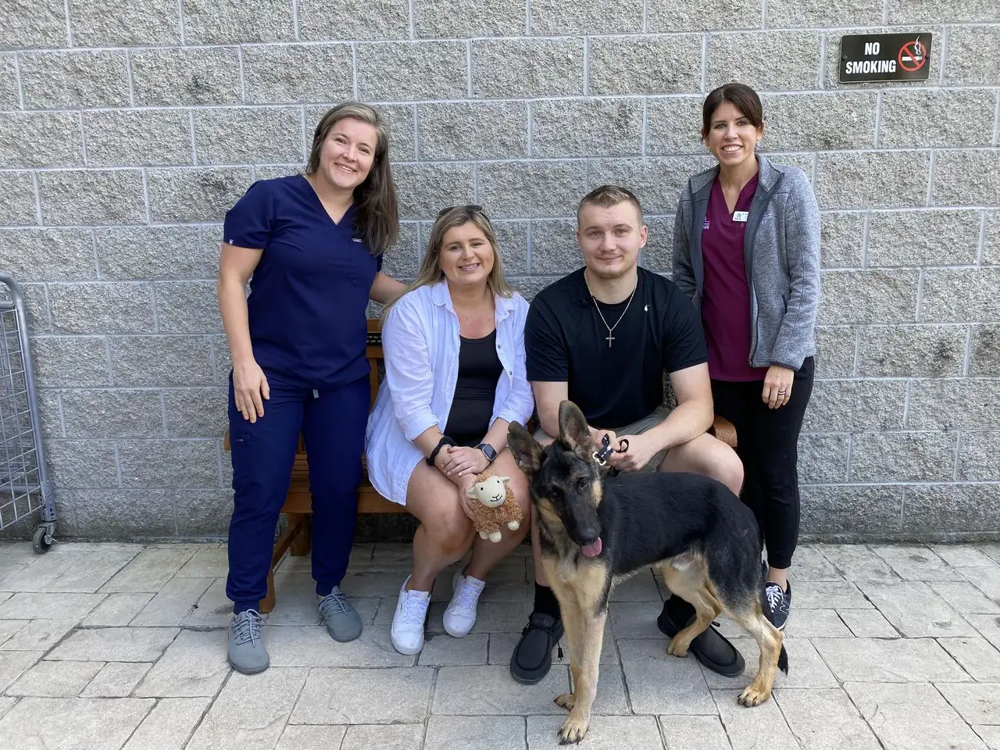
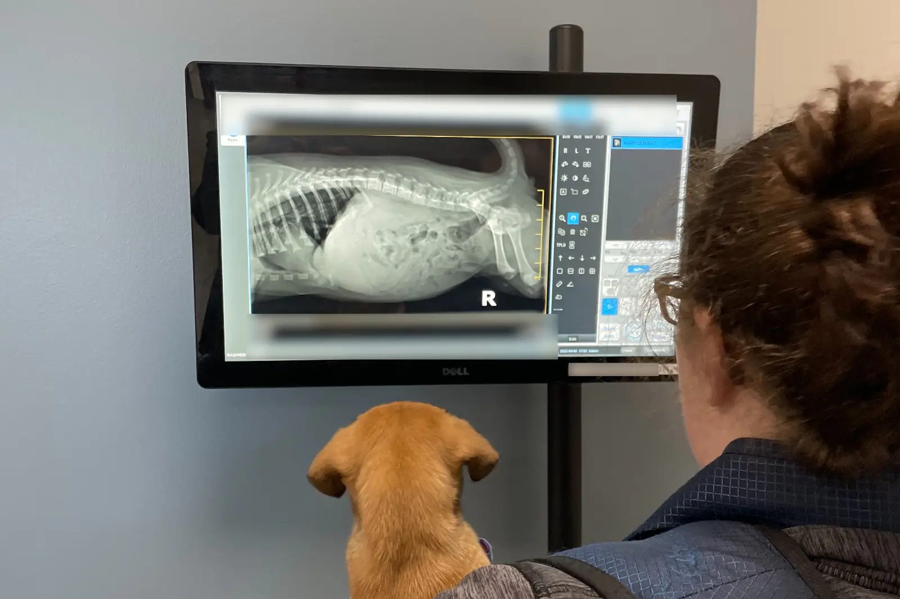
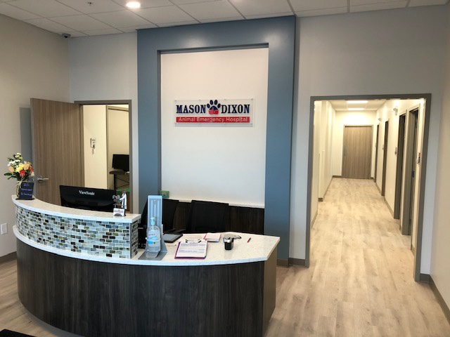

Open 24/7 Accepting Emergency Patients
Small enough to care. Big enough to heal.
Mason Dixon Animal Emergency Hospital is an independently owned emergency veterinary hospital in Shrewsbury, Pennsylvania, providing 24/7 emergency and critical care for pets throughout Southern York County, Northern Baltimore County, and surrounding communities.
Since opening in 2020, we've combined more than 40 years of veterinary emergency experience with modern medical capabilities and a collaborative, team-first approach.
We're proud of the care we provide, the people who make it possible, and the workplace we're building together.

Our Story
Mason Dixon was founded on a simple belief: exceptional veterinary care starts with experienced professionals who have the tools, support, and freedom to do their best work.
Unlike corporate veterinary hospital chains, we're locally owned and operated, with a leadership team invested in our people, patients, and community. In the hospital there's no formula to treat patients, you have the creativity and freedom to handle each case in the best way possible.
Our commitment extends beyond treating emergencies. We're building a hospital where collaboration matters, professional growth is encouraged, and every team member contributes to our success.
Challenging Cases. Strong Teams. Real Opportunities.
Emergency veterinary medicine is demanding, unpredictable, and incredibly rewarding. It's a career for professionals who love solving problems, thinking on their feet, and making a meaningful difference.
At Mason Dixon, you'll work alongside experienced emergency veterinarians and technicians, handling everything from urgent outpatient care to complex, life-threatening medical cases.
Practice in a modern, 6,200-square-foot facility equipped for emergency surgery, intensive care, diagnostics, and critical patient management.
Work with professionals who share knowledge, support each other, and make decisions collaboratively.
Build clinical skills through hands-on experience, continuing education, professional development, and mentorship.
Your ideas matter. We value accountability, professional judgment, and contributions from every member of our team.
Competitive compensation, benefits, flexible scheduling opportunities, and a workplace that respects your well-being.
Whether you're an experienced emergency veterinarian, a veterinary technician ready to advance, or a professional looking to enter emergency medicine, Mason Dixon offers the opportunity to grow while doing meaningful work.
Our Medicine
Our emergency veterinarians, technicians, and support professionals provide medical care for dogs, cats, and many exotic pets, 24 hours a day, 365 days a year.
Urgent evaluation and treatment for illness, injury, and unexpected medical conditions.
Surgical procedures for serious injuries and critical conditions.
Advanced monitoring and treatment for pets requiring hospitalization.
Laboratory testing, digital X-ray, ultrasound, and other diagnostic capabilities.
Oxygen therapy, blood transfusions, endoscopy, and emergency stabilization.
Support for families facing difficult decisions.

We communicate clearly with pet owners throughout treatment and coordinate with primary care veterinarians when follow-up care is needed.
Our Team
Great veterinary medicine requires more than advanced equipment. It takes skilled professionals who trust each other, communicate clearly, and share a commitment to patient care.
Our team includes experienced emergency veterinarians, veterinary technicians, client service professionals, and hospital leadership working together around the clock.

Our Facility
Our 6,200-square-foot emergency veterinary facility in Shrewsbury, PA, supports advanced diagnostics, emergency surgery, intensive care, and ongoing patient monitoring.
From our dedicated treatment areas to our medical equipment, the hospital is designed to help our team respond efficiently to a wide range of emergency conditions.
Explore Our Hospital & FacilityMason Dixon proudly serves families throughout Southern Pennsylvania and Northern Maryland, including Shrewsbury, Stewartstown, New Freedom, and surrounding communities.
We support local animal welfare organizations and rescue efforts, including the York County SPCA.
We're proud to be a locally owned hospital making a difference both inside and outside our emergency room.
We're open 24 hours a day, 7 days a week, including holidays. No appointment is necessary.
Mason Dixon Animal Emergency Hospital 96 Sofia Drive, Suite 203Join an experienced, collaborative team where challenging work creates opportunities to learn, advance, and make a difference.